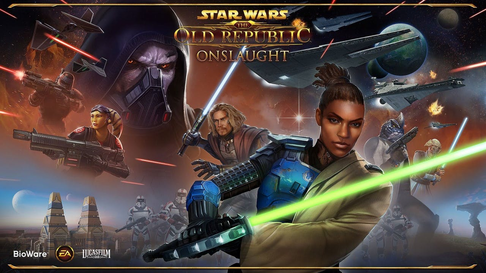

MMORPG oyunları deneyimime bu hafta başladığım Star Wars The Old Republic ile devam ediyorum. Fantastik dünyalarda geçen Elder Scrolls Online ile World of Warcraft’ın yerine uzayı konu alan bir oyunla değişiklik yapmak iyi olur diye düşündüm. Oyunu oynarken 1993-1994 yıllarında oynadığım Privateer’ı hatırlamak ve nostalji yapmak da güzel oldu.
20 Aralık 2011’de piyasaya sürülen Star Wars The Old Republic’i BioWare-Lucasarts geliştirmiş ve Electronic Arts pazarlamasını yapmış. Nedense oyun hakkında bugüne kadar fazla bir bilgim yoktu. Oyunun konusu film serisindeki olaylardan yaklaşık 3.500 yıl öncesinde geçtiğinden, filmlerden aşina olduğumuz pek çok şey oyunun içinde yer almıyor. Bu durum bende bir hayal kırıklığı yaratmadı değil, filmden bildiğimiz petler ve droidler olmadan oyunun koleksiyon kısmı çok zayıf kalıyor haliyle.
Oyunda her class’a ait farklı bir hikaye bölümü var ve oldukça detaylı hazırlanmış tamamı seslendirilmiş, değişen açılardan kamera görüntüleri ile verilen anlatım bölümleriyle oyunun kalitesini artıran en önemli etkenlerden biri.
Grup içeriğine pek gireceğimi sanmıyorum zaten anladığım kadarıyla çok kalabalık bir oyuncu kitlesi yok, çoğunluk PvP oynuyor. Bununla birlikte 2 ve daha fazla kişiyle yapılması önerilen Heroic içeriği companion yardımı ile solo olarak oynamak da mümkün gibi şu an için.
Star Wars The Old Republic son 1-2 aydır WoW ile zehirlenen bünyeme, -eğer ilerleyen Level’larda da bu haliyle devam ederse- sakin sakin solo olarak oynayabileceğim dolu içerikli bir MMORPG olarak ilaç gibi gelecek diye düşünüyorum.